Making Car Buying Feel Like One Continuous Journey
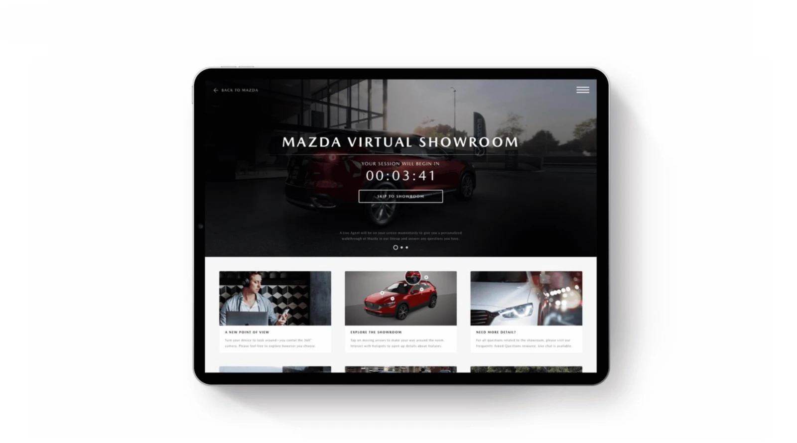
• The Bigger Picture
Context
As car-buying behavior shifted increasingly online, I worked on improving Mazda’s digital experience to help users complete more of their journey before stepping into a dealership.
The goal was simple: reduce friction across the path from browsing to buying, while keeping the transition to in-person seamless when needed.
• What Was Broken
Problem
Dealers must adapt to provide a more personalized and less stressful car buying process.
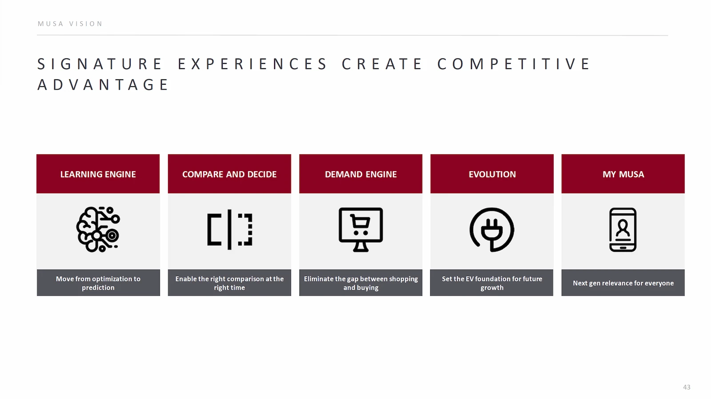
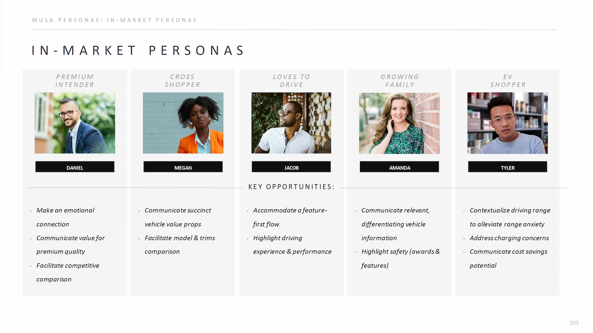
Drivers
Car buying is a fragmented process—research online, then restart at the dealership. This creates friction, repetition, and uncertainty.
Business
Disconnected digital and in-person experiences slow conversion and reduce customer confidence.
• Seat At The Table
Role
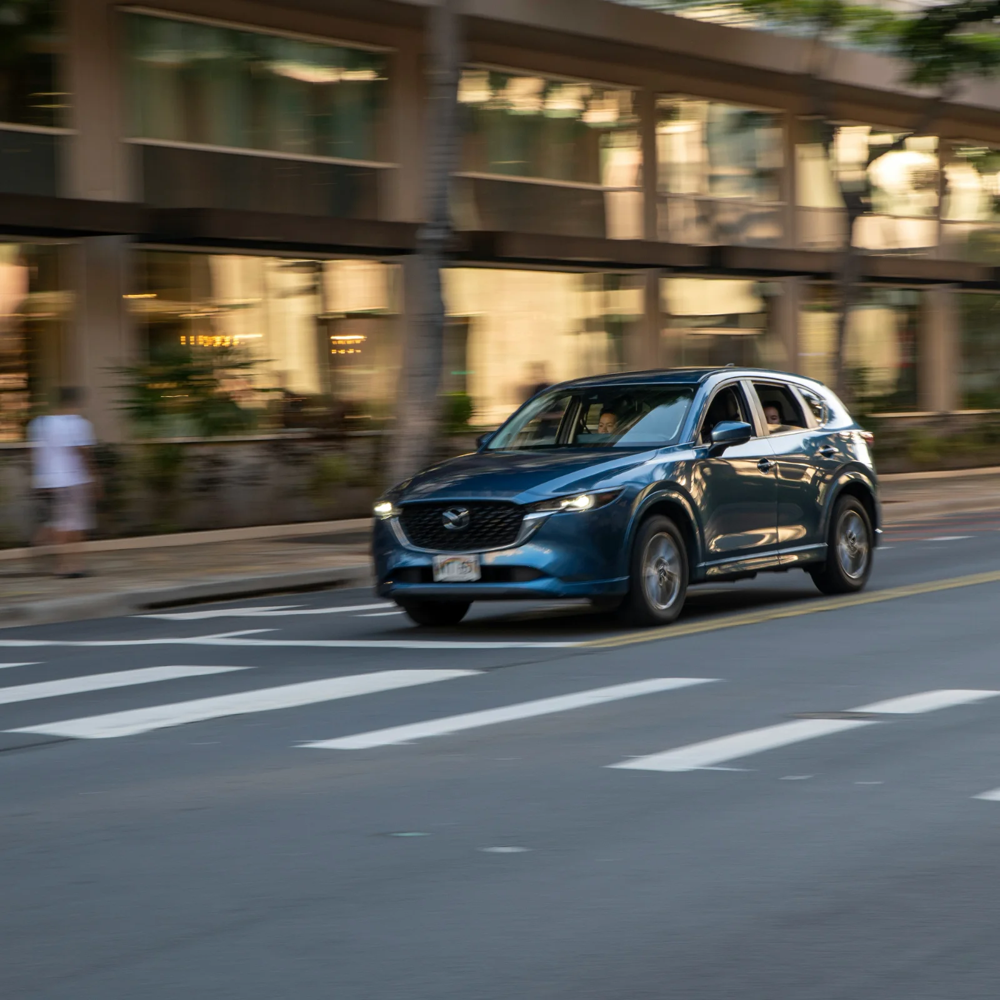
Contributed to UX strategy and interaction design.
Collaborated with product, engineering, and stakeholders.
Evaluated usability across digital touchpoints.
• Reading Between Lines
Insight
"Customers don’t see separate channels—they see one experience. When those channels don’t connect, it creates friction and breaks trust."
Every unnecessary step, repeated input, or unclear transition resets their momentum.
• Signals From The Noise
Key Findings
There will need to be a mix of both online and offline services as a completely virtual experience.
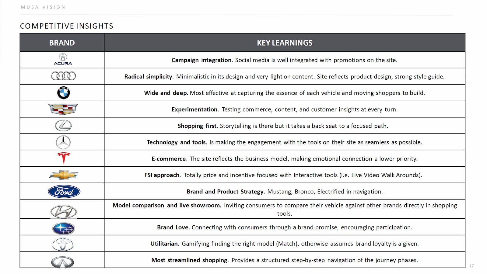
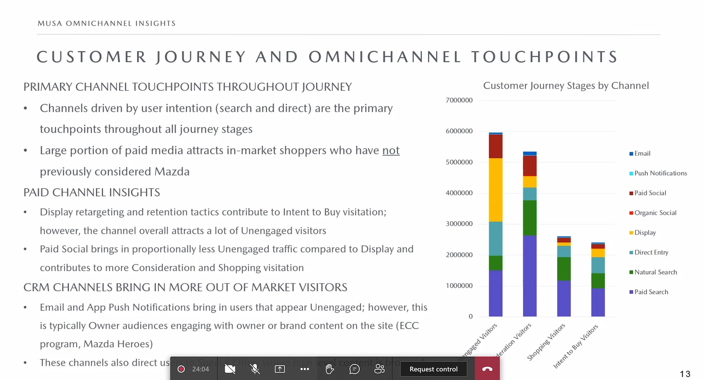
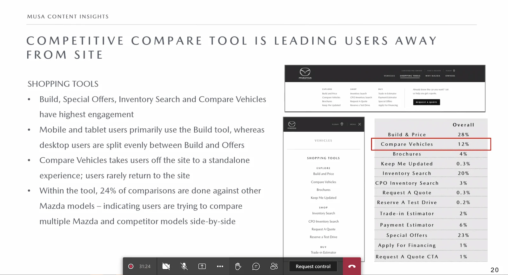
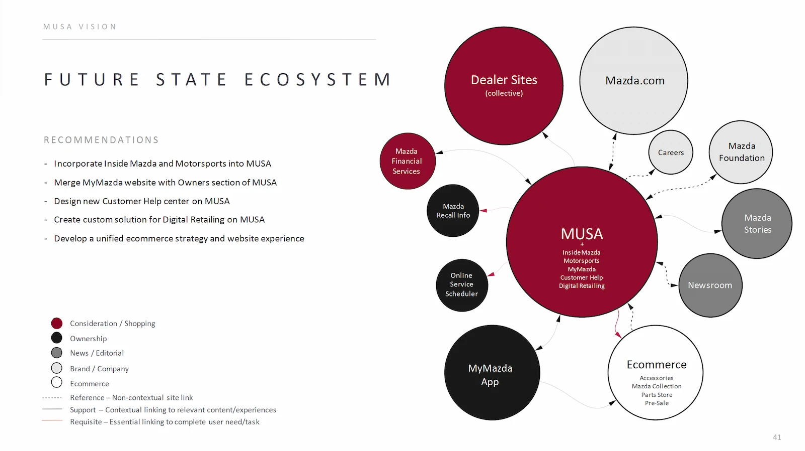
Momentum drives conversion
The easier it is to continue, the more likely users are to move forward. Learning engines has proven to increase customer experiences over time.
Redundancy kills trust
Re-entering information or repeating steps creates frustration. They want to minimize face-to-face contact and avoid the hassle when dealing with sellers.
Online before in-person
Customers are increasingly expecting more online digital options for online purchase. Users need to know what’s next—before committing to it.
• Where Ideas Landed
Solution
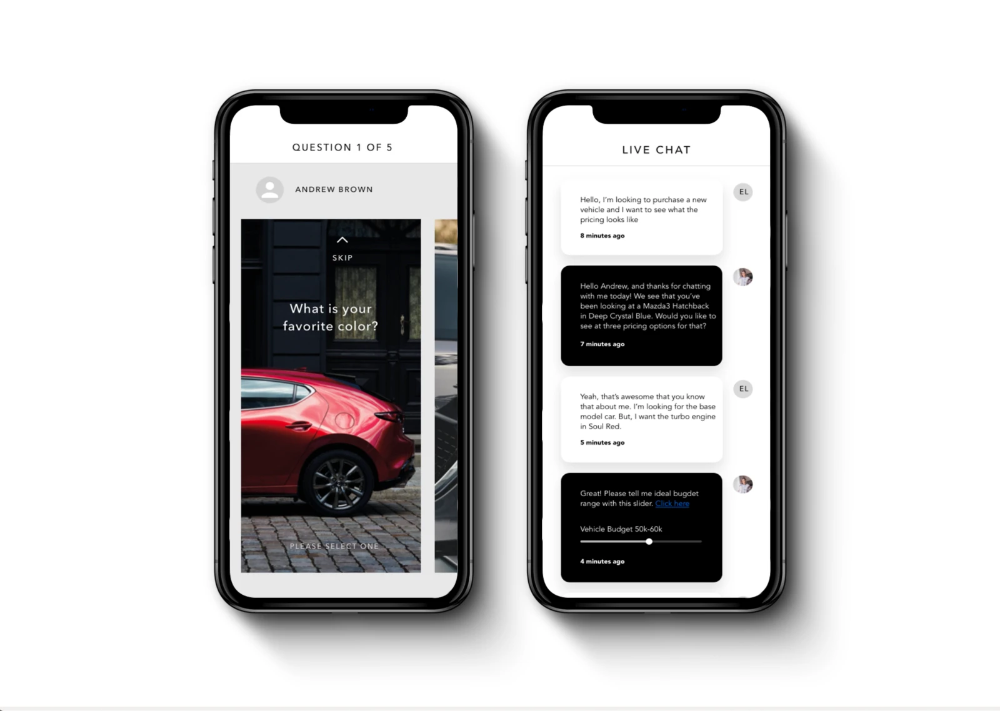
Streamlined key parts of the shopping experience so users could complete more of the process online, minimizing redundant steps at the dealership and reducing the need for in-person time.
Interaction Design
High-intent shopping flows.
Reduced steps and decision points.
Prioritized clarity over exploration.
System-Level Thnking
Connected digital progress with in-dealership interactions.
Created consistent patterns across touchpoints.
Supported a smoother transition from online to in-person.
• Insight Into Form
Design Highlights
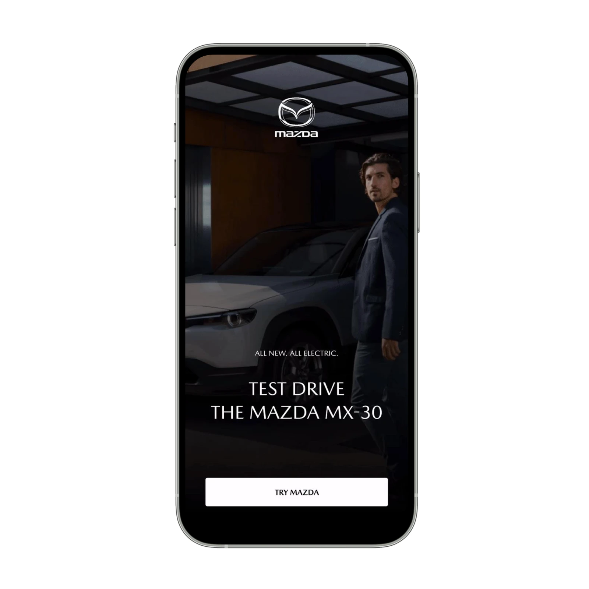
Clear structure to guide users through the buying process.
Reduced cognitive load during decision-making.
Immediate feedback to reinforce progress.
Designed for continuity across devices and environments.
• Moving The Needle
Impact
Reduce friction
Provided features such as intuitive comparison to help users make important decisions before stepping foot into the dealership.
Building a signature experience
Includes services such as a resource hub for users to select and choose their sales agent or to learn more about them.
Expand the learning engine
Team is building features to bring users along for the ride and to learn more about their needs through machine learning.
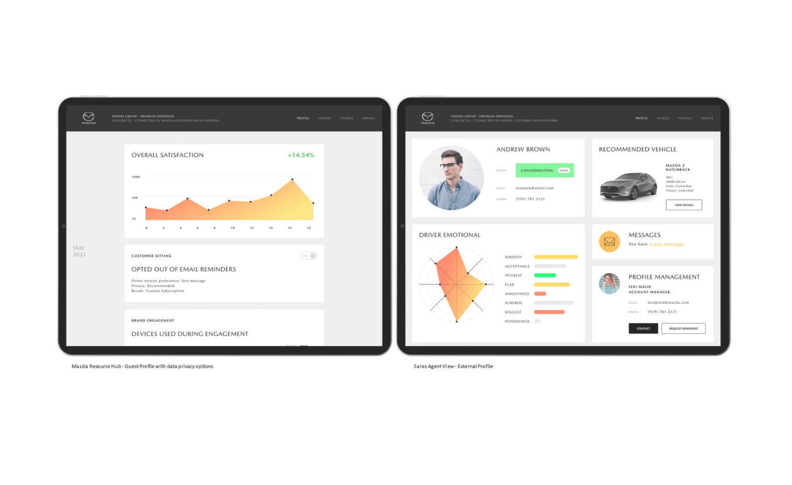
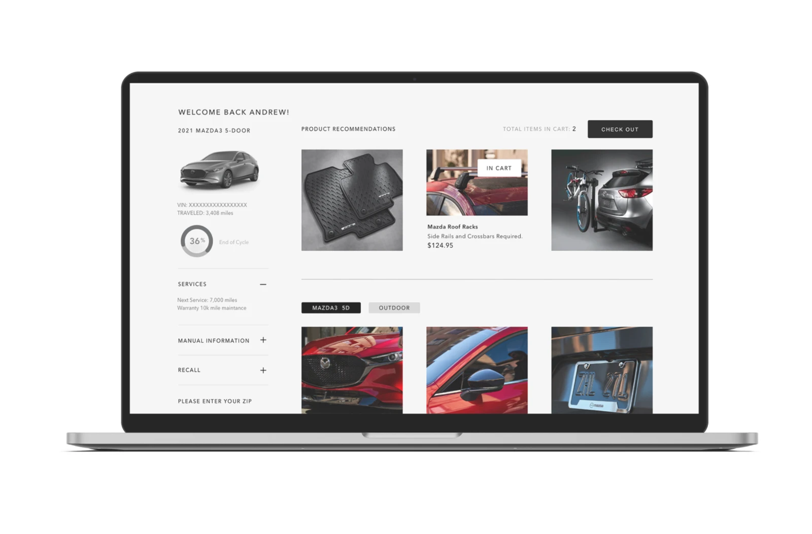
• Lessons Worth Keeping